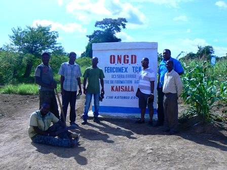

FRNotre Terre — Notre Prospérité
ENOur Land — Our Prosperity
SWUdongo Wetu — Ufanisi Wetu
Ferme Communautaire et Expérimentale – La Terre de Chez-Nous, au service des communautés congolaises depuis 1997.
Créée en 1997, FERCOMEX-TCN a d'abord été une ferme expérimentale destinée à accompagner les petits producteurs agricoles. Au fil des années, l'organisation s'est imposée comme un acteur du développement local : renforcement des capacités des communautés rurales, amélioration de la sécurité alimentaire et promotion de pratiques agricoles durables.
À travers ses actions de sensibilisation, de formation, de plaidoyer et d'innovation communautaire, l'organisation contribue à la lutte contre la pauvreté, à l'autonomisation des populations locales et à l'atteinte des Objectifs de Développement Durable (ODD), tout en participant à des initiatives internationales en faveur de la justice environnementale et de la transition écologique.

Près de trois décennies d'action continue auprès des communautés congolaises.
Être une organisation de référence en République démocratique du Congo dans la promotion du développement durable, de l'agriculture communautaire et de la protection de l'environnement, en bâtissant des communautés résilientes, autonomes et prospères.
Contribuer au développement durable des communautés en République démocratique du Congo par la promotion d'une agriculture durable, la protection de l'environnement, le renforcement de la résilience climatique et l'amélioration des conditions socio-économiques des populations.

FERCOMEX-TCN est portée par un conseil d'administration de neuf membres effectifs et par sept membres consultants : agronomes, juristes, infirmières, gestionnaires, experts en technologie et en développement communautaire. Une équipe enracinée à Lubumbashi et appuyée depuis le Canada par son président-fondateur.
Découvrir toute l'équipe